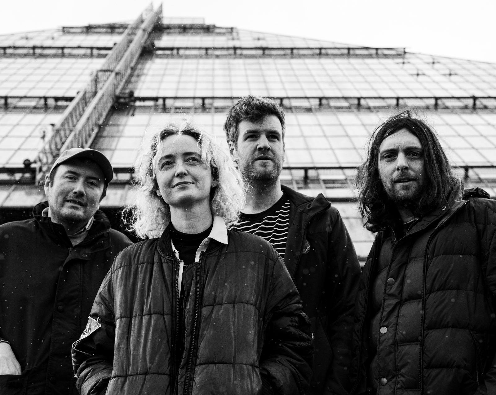
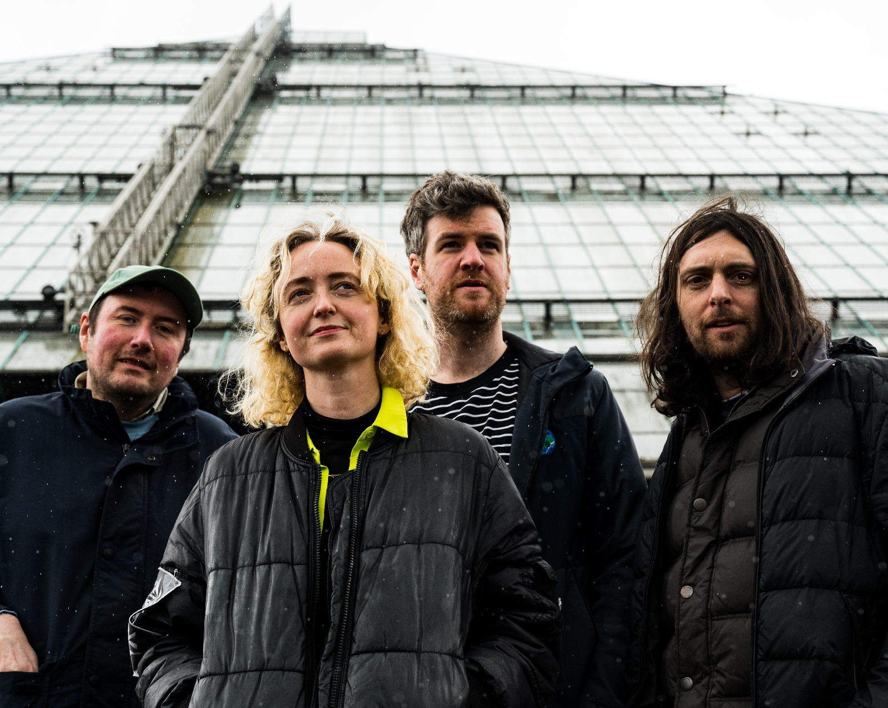

Now 5 years deep in existence, Glasgow's NIGHTSHIFT continue to surf the dazzling plains of their collective reality via an almost elemental take on music and friendship.
With their latest offering Homosapien due for release on ??/??/?? via Trouble in Mind, a noticeable alteration has taken place since the band's debut LP Zoe.
Chris White (Spinning Coin) now picks up the guitar instead of drums (his previous role in the band) providing a whole new dimension to their sound.
His distinctive playing delivers a countrified energy that is central to the forthcoming album, leading the song structures into more succinct and colourful places, matching the upbeat and playful nature the band has always drawn strength from, only more so now under his stylish approach.
The kinetic drumming of Rob Alexander (Tarantula/Radio Banter) allows for a second new development in the band dynamic. Replacing Chris (his longtime friend from childhood) is no mean feat. Thankfully his drumming is an avalanche of skilful technique with a glorious abandon that swerves it away from the academic and absolutely into a wild and tactile performance that lifts the sound and finalises a metamorphosis for the group.
Still at the beating heart of proceedings is Eothen Stern (also of 2 Ply). Her incredible vocalisms, keyboard, percussion, and lyrical gifts illuminate the group's output with an optimistic urgency that is unmatched.
On Homosapien she wears her heart on her sleeve in places, but even in the song's darkest moments, the words create a sense of hope and potential that is synonymous with Eothen as a person. She doesn't shy away from politics or contemporary love languages and finds humour, earnestness, and critique at every turn.
Andrew Robert Doig continues to play bass (Dancer/Robert Sotelo) and provides occasional lead vocals.
With these newest songs born out of some genuinely existential times (birth, death and love all played a very real part in the gestation of the new record) it's a great irony that Nightshift are sculpting their most succinct and tuneful music yet from this potential chaos, but it's this unexpected quality that drives them onwards into a dizzying universe.
NIGHTSHIFT website : https://nightshit.band
 hi res  hi res hi res hi res
hi res
hi res
hi res
hi res
hi res{kind=link}
{kind=link}
{kind=link}
{kind=link}
{kind=link}
{kind=link}